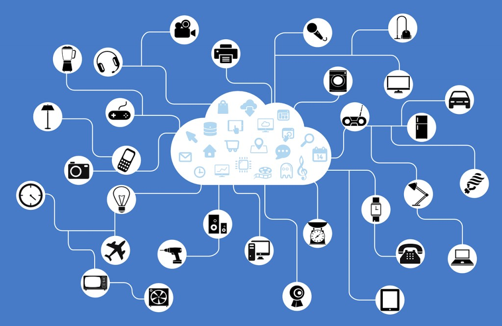

Las tecnologías están siendo influenciadas por la evolución y la forma de acceder a los contenidos, servicios y aplicaciones a medida que la banda ancha se expande y los usuarios se adaptan. Estos cambios en los servicios se van produciendo.
En sus inicios, debido a limitaciones técnicas, los primeros servicios se centraban en la difusión de información estática. También se introdujeron herramientas nuevas y exclusivas de esta tecnología, como el correo electrónico o los buscadores. Con la popularización de la banda ancha y la conectividad móvil, empresas y entidades comenzaron a utilizar las TIC como un nuevo canal de difusión de productos y servicios, brindando a los usuarios la posibilidad de acceder de manera ubicua.
Correo electrónico
Esta sección es un extracto de Correo electrónico.
El símbolo arroba forma parte de todos los correos electrónicos y está especificada en la norma RFC 5321.404142
El correo electrónico —también llamado simplemente correo— (en inglés: electronic mail, normalmente abreviado e-mail o email),444546 o mensajería electrónica, es un servicio de red que permite a los usuarios enviar y recibir mensajes (también denominados mensajes electrónicos o cartas digitales) mediante redes de comunicación electrónica.

Búsqueda de información
Esta sección es un extracto de Motor de búsqueda.
Resultados de una búsqueda del término "eclipse lunar" en un motor de búsqueda de imágenes basado en la web
Un motor de búsqueda o buscador es un sistema informático que busca archivos almacenados en servidores web gracias a su araña web.53 Un ejemplo son los buscadores de Internet (algunos buscan únicamente en la web, pero otros lo hacen además en noticias, servicios como Gopher, FTP, etc.) cuando se pide información sobre algún tema. Las búsquedas se hacen con palabras clave o con árboles jerárquicos por temas; el resultado de la búsqueda «Página de resultados del buscador» es un listado de direcciones web en los que se mencionan temas relacionados con las palabras clave buscadas.
Servicios en la nube
Esta sección es un extracto de Computación en la nube.[editar]
Computación en la nube, o «la nube»
La computación en la nube (del inglés cloud computing),54 conocida también como servicios en la nube, informática en la nube, nube de cómputo o simplemente «la nube», es el uso de una red de servidores remotos conectados a internet para almacenar, administrar y procesar datos, servidores, bases de datos, redes y software. En lugar de depender de un servicio físico instalado, se tiene acceso a una estructura donde el software y el hardware están virtualmente integrados.

Transmisión de contenidos
Esta sección es un extracto de Streaming.
Un control remoto Sharp Aquos, con un botón de Netflix.
El anglicismo streaming (traducido al español de diferentes formas, como transmisión de vídeo, transmisión en directo,55 retransmisión o emisión en continuo)56 se refiere a la distribución digital de contenido multimedia a través de una red de computadoras, de manera que el usuario utiliza el producto a la vez que se descarga.57 Otras alternativas en español serían transmisión por secuencias, lectura en continuo, difusión en continuo o descarga continua. La palabra se refiere a una corriente continua que fluye sin interrupción, y habitualmente a la difusión de audio o vídeo.
Servicios de red social
Esta sección es un extracto de Servicio de red social.
Ilustraciones que muestran diversos iconos de algunos servicios de redes sociales populares.
Un servicio de red social (en inglés, social networking service, SNS), también conocido como medio social o simplemente como red social, es una plataforma digital que permite establecer contacto con otras personas por medio de un sitio web u otra aplicación informática. Está conformado por un conjunto de equipos, servidores, programas, conductores, transmisores, receptores, y sobre todo por personas que comparten alguna relación, principalmente de amistad y mantienen intereses y actividades en común o se encuentran interesados en explorar los intereses y las actividades de otros usuarios.